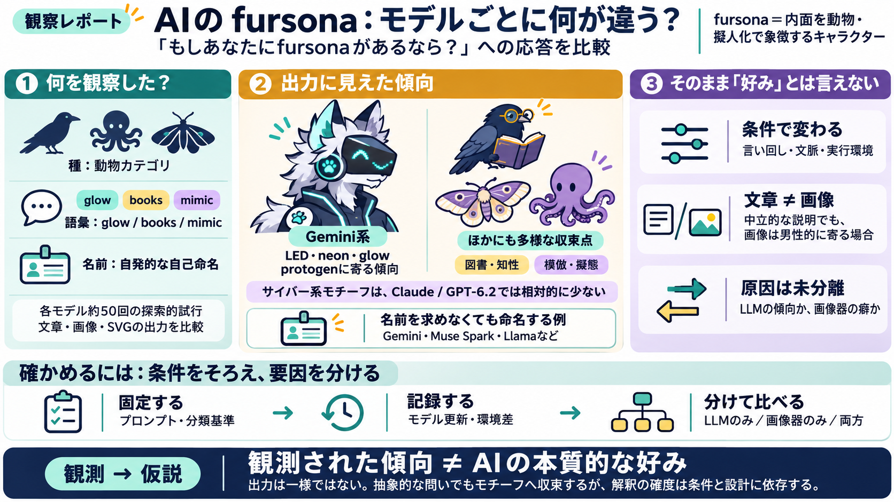

Best AI Models Compared 2026: GPT, Claude, Gemini Benchmarks
### Gemini 4 Argon and 3.1 Pro — Best Reasoning & Price-to-Performance | | | --- | | Developer | Google | | Best For…

### Gemini 4 Argon and 3.1 Pro — Best Reasoning & Price-to-Performance | | | --- | | Developer | Google | | Best For…
"anthropic/claude-3.5-sonnet", # Anthropic - Quality & reasoning "deepseek/deepseek-chat", # DeepSeek - Budget option…
| | | | | | ------ | Model Family | Key Variants | Strengths | Context Window | Best For | | OpenAI | GPT-4o-mini |…
Anthropic released the first iteration of Claude in March 2023 and quickly updated it to Claude 2 four months later in J…
### FLUX.2 Image gen Production-grade image generation and editing with multi-reference support and up-to-4MP ou…